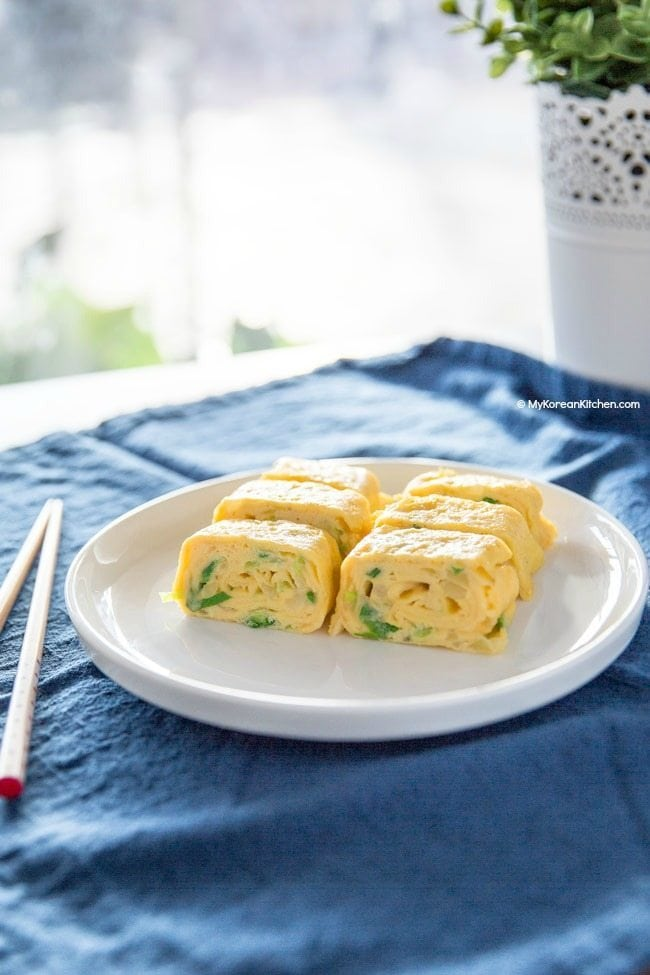

Delicious Korean egg roll (Gyeran Mari) recipe!
Korean egg roll is a popular Korean side dish. The ingredients are quite readily accessible, so my mom used to make it a lot for us.
Also, because the egg looks pretty and and quite compact, it’s popular in a school lunch box. I always loved having it in my box! Lastly, it’s also a popular drink snack with soju (Korean distilled liquor).
Well seasoned, Korean egg roll is savory and slightly salty. It’s perfect with a bowl of steamed rice. You can also squeeze some tomato sauce / ketchup over the egg rolls to suit your taste.
I’m sure most of you already figured this part out, but I will spill it out any way. 🙂
Korean egg roll is called gyeran mari / gyeranmari (계란말이). Gyeran (계란) means egg and mari (말이) describes the status of being rolled up. So, essentially, Korean egg roll, Korean rolled egg and Korean rolled omelette means the same thing!
Another thing to note is Korean egg roll is cooked much like Japanese egg roll – tamagoyaki. (Frankly speaking, I can’t tell if there’s a big difference, but in my memory, tamagoyaki always seem sweeter than gyeran mari.)
Obviously, the most important ingredients for Korean egg roll is egg, then salt. You can make it with these two ingredients only if you want.
Other popular ingredients are finely diced bell peppers, carrots, zucchini, onion, ham, crab meat, canned tuna and roasted seaweed etc. The list can go on.
And, in this recipe, I used green onion and shredded mozzarella cheese, which are also popular to add. They add a nice flavor and cheesy aroma to the egg, so I’m sure you will like them!
In the past, I’ve been making this Korean egg roll in a round cast iron skillet, which works fine, by the way! But, I recently invested in a non-stick rectangular pan that is suitable for my induction cooktop, to make the cooking process easier and faster! (This is the one I got, but you can also get a cheaper one like this one.)
There’s no need to buy this specialty omelette pan but it does make the cooking easier and faster. Also, I think you can make nicely shaped egg rolls in a more consistent way using this pan. Anyway, something to think about!
I hope you enjoy making Korean egg roll soon!
P.S. If you like this recipe, you might also like these Korean egg side dishes – Korean steamed egg, Braised eggs and Rolled egg with seaweed
*1 Tbsp = 15 ml